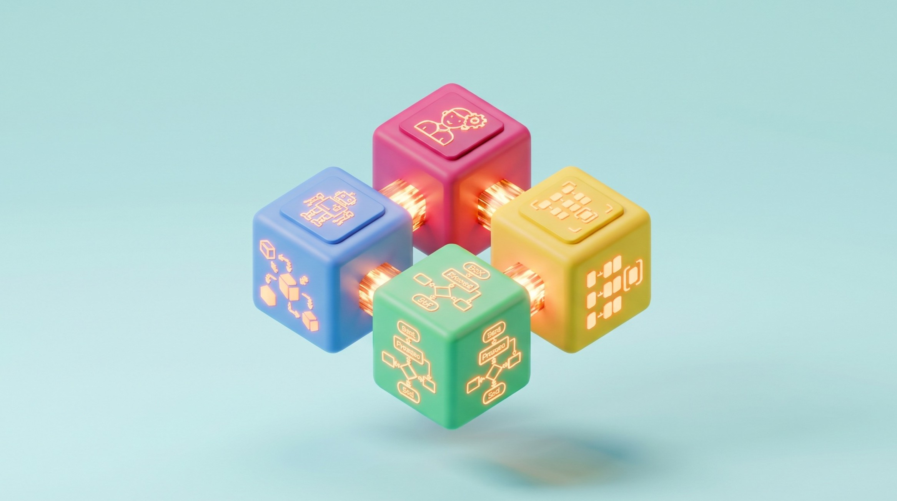

Belajar Informatika Lebih Seru & Interaktif! 🚀
Media pembelajaran interaktif berbasis web untuk memvisualisasikan konsep abstrak Informatika melalui simulasi animasi, suara interaktif, dan kuis formatif.

Jaringan Komputer: Perjalanan Paket Data
Simulasi interaktif memahami mekanisme transmisi data: bagaimana teks dan media dipecah menjadi paket data, dialihkan router, dan dirangkai kembali di perangkat tujuan.

Berpikir Komputasional & 4 Pilar Logika
Latih kemampuan berpikir komputasional melalui 4 pilar logika (Dekomposisi, Pola, Abstraksi, Algoritma) dengan studi kasus kehidupan sehari-hari dan simulasi rumah cerdas.
💡 Panduan Penggunaan
Media pembelajaran siap pakai untuk pembelajaran mandiri siswa atau demonstrasi kelas.
Dapat dibuka langsung di browser (Chrome, Edge, Safari) tanpa perlu menginstal aplikasi tambahan.
Aktifkan suara atau gunakan earphone untuk mendengar audio narasi materi dan efek interaktif.
Dilengkapi evaluasi mandiri interaktif untuk menguji tingkat pemahaman konsep materi.